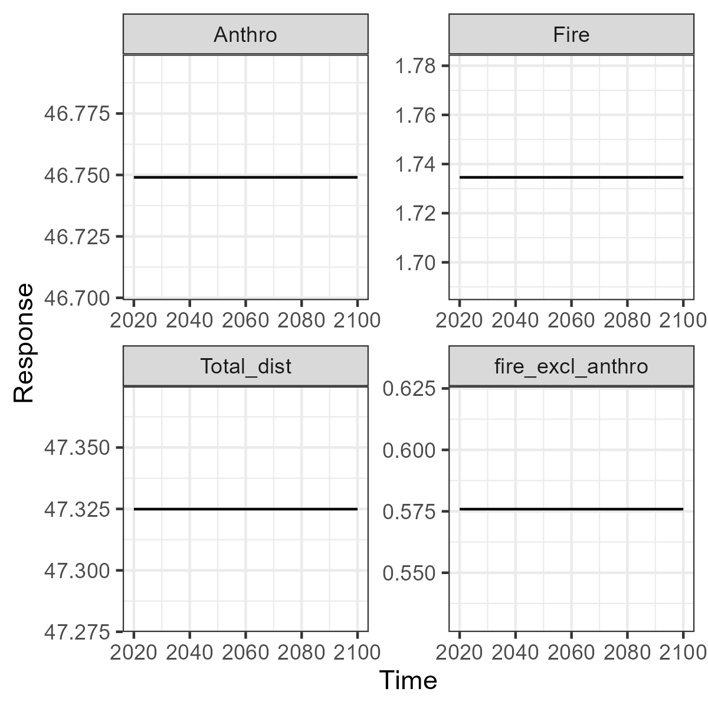
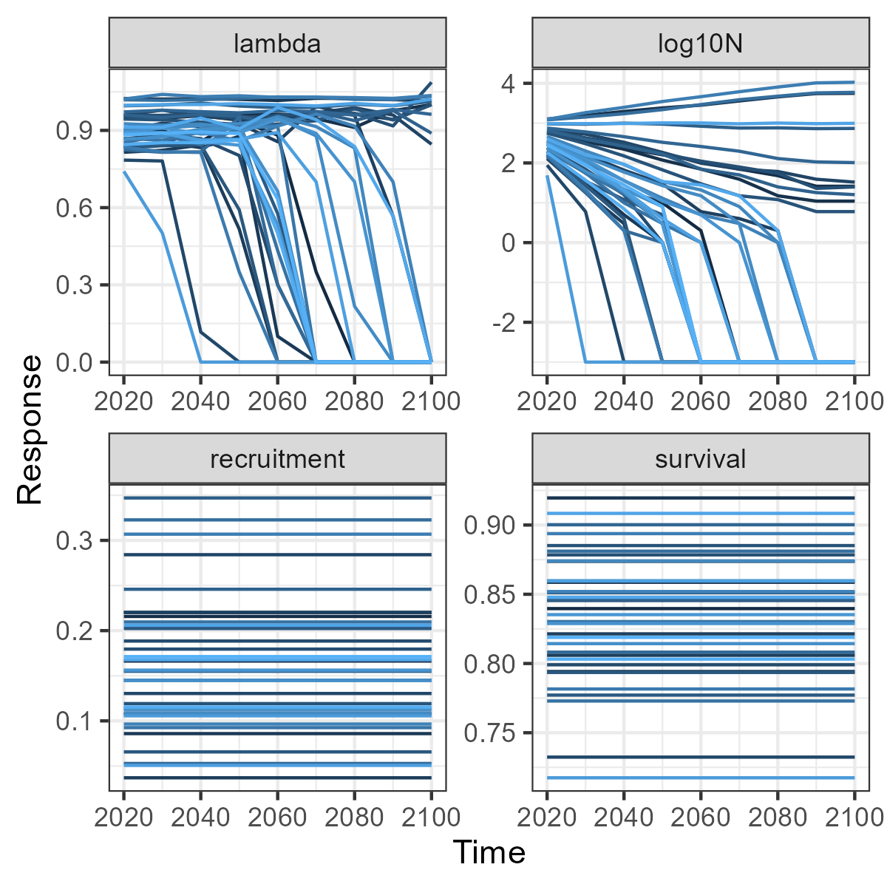

UI_help.RmdThis vignette is directed at users of the SyncroSim user interface for integrating SpaDES, LandR and FireSense projections with caribou habitat and demographic models in the caribouMetrics package. There are vignettes available for the caribou habitat and demographic models that give details on how the models work and how to run them in R. To fully understand these models please refer to the journal articles where they were published: Hornseth and Rempel (2016) Johnson et. al. (2020) and ECCC (2011).
Below we provide links between the options exposed in the UI and the caribouMetrics function documentation and demonstrate how to set up a SynscroSim library and extract scenario results for plotting in R using rsyncrosim.
By right clicking a scenario you can access the scenario properties. The Caribou Metrics tab has options that can be set for the models. The table below shows the option from the UI, the corresponding argument name in caribouMetrics, and the names of the function(s) in caribouMetrics that use that argument. Clicking the function name will take you to the documentation for that function. You can read the description at the top of the page to learn what the function does and then find the argument name to read its definition.
| UI option | caribouMetrics argument | Function | Notes |
|---|---|---|---|
| Tab: Caribou Range | |||
| Caribou Range Name and Coeff Range Name | caribouRange | caribouHabitat() |
|
| Caribou Range Name | projectPoly |
caribouHabitat() and disturbanceMetrics()
|
|
| Tab:Caribou Model Options | |||
| ECCC Buffer Width | bufferWidth | disturbanceMetrics() |
|
| Project Polygon Padding | padProjPoly | caribouHabitat() |
|
| Focal Padding | padFocal |
caribouHabitat() and disturbanceMetrics()
|
|
| Number of Demographic Trajectories | replicates | demographicCoefficients() |
|
| Demographic Model Version | modelVersion | demographicCoefficients() |
|
| Survival Model Number | survivalModelNumber | demographicCoefficients() |
|
| Recruitment Model Number | recruitmentModelNumber | demographicCoefficients() |
|
| Initial Population Size | N | popGrowthJohnson() |
|
| P_0: Maximum recruitment multiplier | P_0 | popGrowthJohnson() |
|
| P_K: Recruitment multiplier at carrying capacity | P_K | popGrowthJohnson() |
|
| a: Density dependence shape parameter | a | popGrowthJohnson() |
|
| b: Allee effect parameter | b | popGrowthJohnson() |
|
| K: Carrying capacity multiplier | K | popGrowthJohnson() |
|
| r_max: Maximum population growth rate | r_max | popGrowthJohnson() |
|
| s: Sex ratio | s | popGrowthJohnson() |
|
| l_R: Minimum recruitment | l_R | popGrowthJohnson() |
|
| h_R: Maximum recruitment | h_R | popGrowthJohnson() |
|
| l_S: Minimum survival | l_S | popGrowthJohnson() |
|
| h_S: Maximum survival | h_S | popGrowthJohnson() |
|
| Interannual Variation | interannualVar | popGrowthJohnson() |
|
| probOption | probOption | popGrowthJohnson() |
|
| Tab: Raster Data | |||
| Harvest | anthroDist | caribouHabitat() |
|
| Anthropogenic Disturbance | anthroDist | caribouHabitat() |
|
| Natural Disturbances | natDist | caribouHabitat() |
|
| Provincial Land Cover | landCover | caribouHabitat() |
|
| Tab: Polygon Data | |||
| Ranges | projectPoly |
caribouHabitat() and disturbanceMetrics()
|
This .shp file can include multiple range polygons and the ones to use will be selected based on the Caribou Range Name provided |
| Eskers | esker | cariouHabitat() |
|
| Linear Features | linFeat | cariouHabitat() |
Here we demonstrate how to set up a SyncroSim Library for the ROFSim Package using the rsyncrosim package. For more details on the rsyncrosim package and its funcitons see the Introduction to rsyncrosim vignette
In this example we will create the new library inside the caribouMetrics package directory in order to take advantage of the example data sets installed there. First we create a library called “demoSSimLib” and then a project called “Demo”.
library(rsyncrosim)
# Install ROFSim package using file path to ssimpkg file
# addPackage("path/to/ROFSim.ssimpkg")
rootPth <- system.file("extdata", package = "caribouMetrics")
cDir <- file.path(rootPth, "demoSSimLib")
dir.create(cDir)
libName <- "demoSSimLib"
cLib <- ssimLibrary(paste0(cDir, "/", libName), package = "ROFSim", overwrite = TRUE)
cProj <- project(cLib, "Demo")Next, we ensure that SyncroSim uses the same R version as is used to run this vignette. This is only necessary if you have multiple R versions installed.
# Make sure the library uses the correct R installation
rConfig <- datasheet(cLib, name = "core_RConfig")
rConfig <- addRow(rConfig, c(ExePath = list.files(R.home("bin"), "Rscript", full.names = TRUE)))
saveDatasheet(cLib, rConfig, name = "core_RConfig")Now we will set up the data sheets used at the project level and the run control scenario. To determine the names of the sheets in the project look at cProjDS. You can determine what column names and variable types are expected for a sheet with for example str(datasheet(cProj, "ROFSim_CaribouRange")).
# inspect datasheets used at the project level
cProjDS <- datasheet(cProj)
# set available options for input data
cSheet <- "ROFSim_CaribouRange"
cc <- data.frame(Name = c("James Bay", "Missisa", "Ozhiski", "Nipigon",
"Pagwachuan"))
saveDatasheet(cProj, cc, name = cSheet)
cSheet <- "ROFSim_Rasters"
cc <- data.frame(Name = c("Harvest", "Anthropogenic Disturbance",
"Natural Disturbance", "Provincial Land Cover"))
saveDatasheet(cProj, cc, name = cSheet)
# scenarios - run control
rcScn <- scenario(cProj, "Run Control 2020 - 2100")
cSheet <- "ROFSim_RunControl"
cc <- data.frame(MinimumIteration = 1, MaximumIteration = 1,
MinimumTimestep = 2020, MaximumTimestep = 2100, OutputFrequency = 10)
saveDatasheet(rcScn, cc, name = cSheet)Finally, we set up a scenario by setting options for the models and telling SyncroSim where to find the input files. This scenario inherits the options from the run control scenario created above. We can run the scenario from R or open the SyncroSim library to see the user interface and run it from there.
# scenario - caribou - current
cbScn <- scenario(cProj, "Caribou - 2020-2100")
cSheet <- "core_Pipeline"
cc <- data.frame(StageNameID = "Caribou Habitat", RunOrder = 1)
saveDatasheet(cbScn, cc, name = cSheet)
cSheet <- "ROFSim_RunCaribouRange"
cc <- data.frame(Range = "Nipigon", CoeffRange = "Nipigon")
saveDatasheet(cbScn, cc, name = cSheet)
cSheet <- "ROFSim_CaribouDataSource"
cc <- data.frame(LandCoverRasterID = "Provincial Land Cover",
ProjectShapeFileID = "Ranges",
EskerShapeFileID = "Eskers",
LinearFeatureShapeFileID = "Linear Features",
NaturalDisturbanceRasterID = "Natural Disturbance",
HarvestRasterID = "Harvest",
AnthropogenicRasterID = "Anthropogenic Disturbance")
saveDatasheet(cbScn, cc, name = cSheet)
cSheet <- "ROFSim_CaribouModelOptions"
cc <- data.frame(RunDistMetrics = TRUE, RunCaribouHabitat = TRUE,
RunDemographicModel = TRUE, padProjPoly = TRUE)
saveDatasheet(cbScn, cc, name = cSheet)
cSheet <- "ROFSim_RasterFile"
cc <- data.frame(RastersID = "Natural Disturbance",
Filename = file.path(rootPth, "natDist.tif"))
cc <- rbind(cc, data.frame(RastersID = "Harvest",
Filename = file.path(rootPth, "anthroDist.tif")))
cc <- rbind(cc, data.frame(RastersID = "Provincial Land Cover",
Filename = file.path(rootPth, "landCover.tif")))
saveDatasheet(cbScn, cc, name = cSheet, append = FALSE)
cSheet <- "ROFSim_ExternalFile"
cc <- data.frame(PolygonsID = "Eskers", File = file.path(rootPth, "esker.shp"))
cc <- rbind(cc, data.frame(PolygonsID = "Linear Features",
File = file.path(rootPth, "rail.shp")))
cc <- rbind(cc, data.frame(PolygonsID = "Linear Features",
File = file.path(rootPth, "utilities.shp")))
cc <- rbind(cc, data.frame(PolygonsID = "Ranges",
File = file.path(rootPth, "projectPoly.shp")))
cc <- rbind(cc, data.frame(PolygonsID = "Linear Features",
File = file.path(rootPth, "roads.shp")))
saveDatasheet(cbScn, cc, name = cSheet, append = FALSE)
dependency(cbScn, rcScn)
# run the scenario
cbRes <- run(cbScn)
# Open the library in the SyncroSim UI
# shell.exec(filepath(cLib))Once the scenario has run we can look at the results using the user interface or we can extract the results from the UI and create flexible custom plots in R. Here we extract the disturbance metrics to plot change over time (in our example there is no change) and extract the change in population metrics to see the variation among the 35 replicate populations.
library(ggplot2)
theme_set(theme_bw())
#Find scenario ID of results
scenNames <- scenario(cLib)
#Load result tables
rScn <- scenario(cLib, 3)
distMetrics <- datasheet(rScn, "OutputDisturbanceMetrics")
popMetrics <- datasheet(rScn, "OutputPopulationMetrics")
#See changes in disturbance metrics over time
base1 <- ggplot(data = distMetrics,
aes(x = Timestep, y = Amount))+
geom_line(size = 0.5)+
facet_wrap(~MetricTypeDistID,scales="free")+
xlab("Time")+
ylab("Response")+
theme(legend.position = "none")
base1
popMetrics$MetricTypeDemogID <- as.character(popMetrics$MetricTypeDemogID)
popMetrics$Amount[popMetrics$MetricTypeDemogID == "N"] <-
log10(popMetrics$Amount[popMetrics$MetricTypeDemogID == "N"] + 0.001)
popMetrics$MetricTypeDemogID[popMetrics$MetricTypeDemogID == "N"] <- "log10N"
#See changes in demographic metrics over time
base2 <- ggplot(data = popMetrics,
aes(x = Timestep, y = Amount, group = Replicate,
colour = Replicate))+
geom_line(size = 0.5)+
facet_wrap(~MetricTypeDemogID, scales = "free")+
xlab("Time")+
ylab("Response")+
theme(legend.position = "none")
base2
Finally delete the library to tidy up.